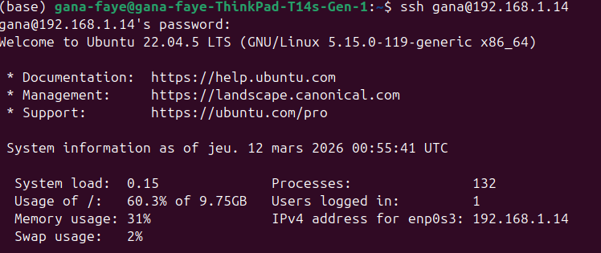
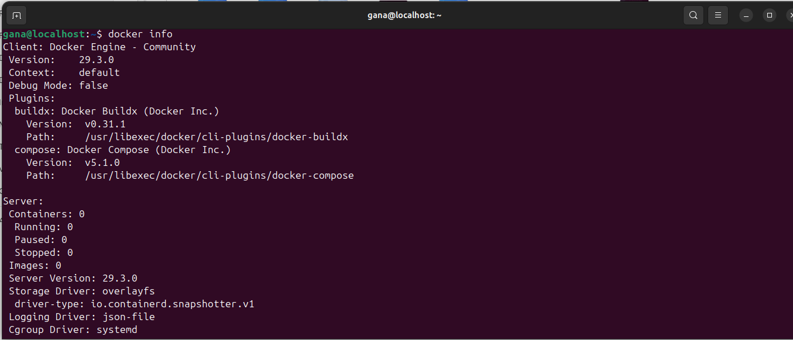
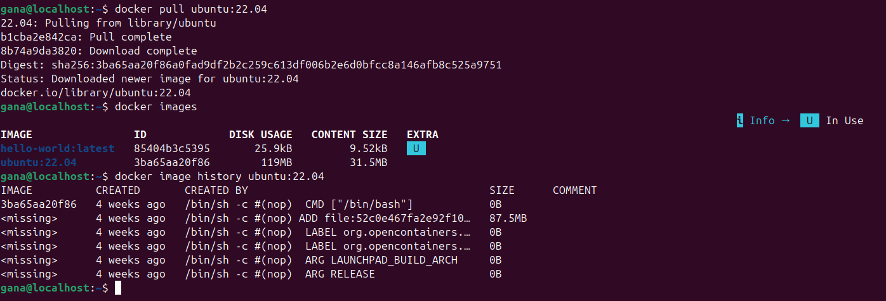
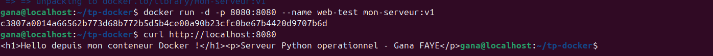
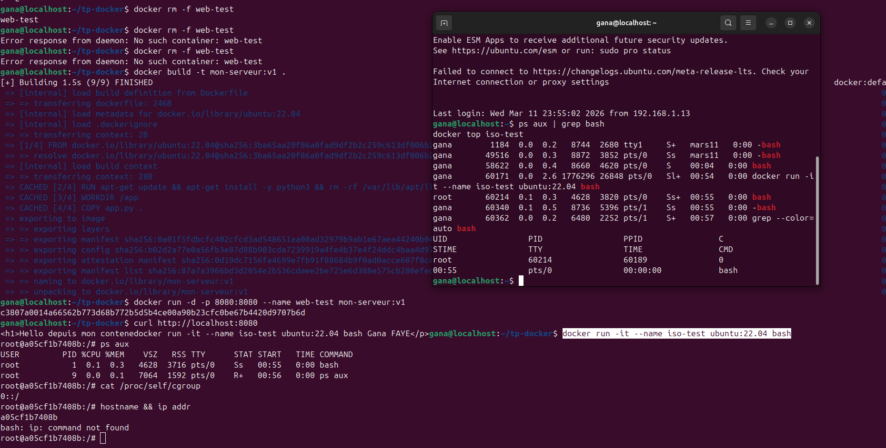
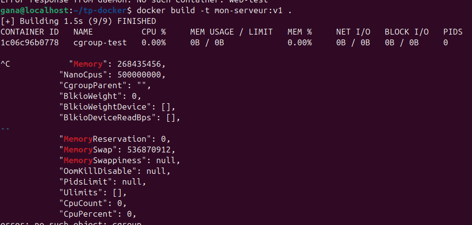
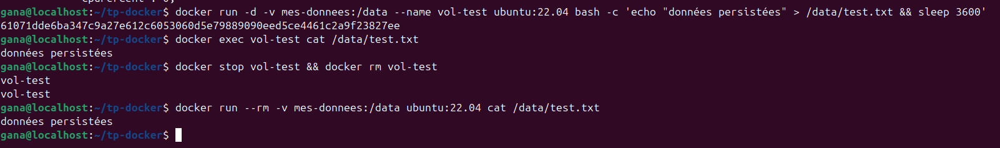
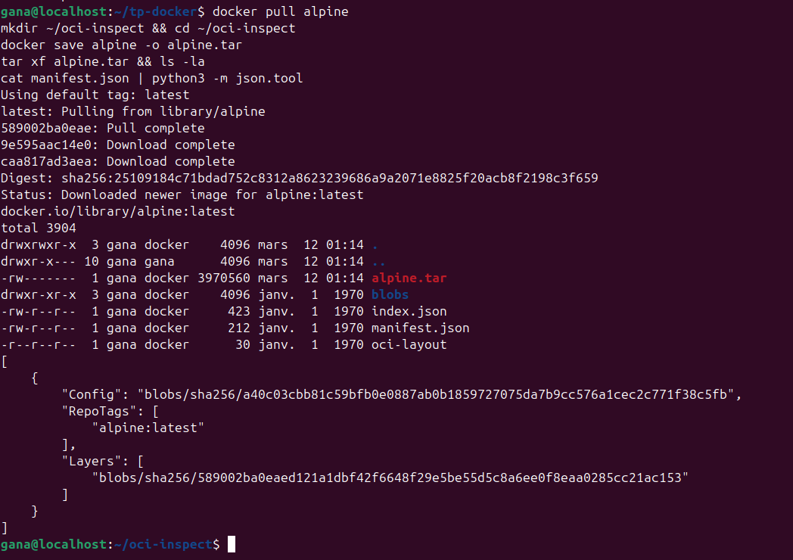

Partie 1 — Concepts Fondamentaux
Virtualisation traditionnelle vs Conteneurs
Analyse des architectures : Hyperviseur Type 1, Type 2 et Conteneurs.
Figure 1 : Comparaison structurelle des couches d'abstraction
- a) Hyperviseur Type 2 : Il possède une couche supplémentaire car il s'exécute sur un Host OS. Contrairement au Type 1 qui accède directement au hardware, le Type 2 dépend du noyau de l'hôte pour gérer les ressources.
- b) Absence de Guest OS : Les conteneurs partagent le noyau Linux de l'hôte. Ils isolent uniquement les processus et dépendances, ce qui supprime le besoin d'un OS complet par instance.
- c) Usage Type 1 : Préféré pour une isolation matérielle totale ou pour faire tourner des OS hétérogènes (ex: Windows et Linux sur un même serveur physique).
Anatomie d'une plateforme de conteneurs
Figure 2 : Architecture générique et composants
a) Le Container Engine est responsable du téléchargement (pull) de l'image depuis le Registry.
b) Le runtime haut niveau gère le cycle de vie (images, réseau), tandis que le bas niveau s'occupe de l'exécution via le noyau.
c) Les images sont en couches (layers) pour permettre la réutilisation et l'optimisation : une couche commune à plusieurs images n'est stockée qu'une seule fois.
Mécanismes d'isolation du noyau Linux
Figure 3 : Architecture interne d'exécution et isolation
a) dockerd (API), containerd (Gestion) et runc (Exécution directe).
b) Les Regular Processes voient tout le système hôte ; les Containerized Processes sont isolés via les Namespaces.
c) Les Cgroups limitent la consommation de RAM et CPU.
d) L'isolation est moins forte car le noyau est partagé entre tous les conteneurs et l'hôte.
Partie 2 — Plateformes Open Source
LXC / LXD & Docker
LXC / LXD (Système)
Cible : Conteneurs système (OS complet).lxc launch ubuntu:22.04 node1
lxc snapshot node1 snap1
Docker (Applicatif)
Cible : Micro-services, CI/CD, Cloud.docker run -d -p 80:80 nginx
docker build -t app:v1 .
Podman & Balena
Podman (Daemonless)
Cible : Sécurité, exécution Rootless native.podman pod create --name mypod
Balena (IoT / Edge)
Cible : Flottes d'appareils, mises à jour OTA.Optimisé pour RAM/Stockage réduit sur Raspberry Pi.
Synthèse et Scénarios
| Critère | LXC / LXD | Docker | Podman | Balena |
|---|---|---|---|---|
| Type | Système | Applicatif | Applicatif | Applicatif |
| Démon | Oui | Oui | Non | Oui |
| Rootless | Non | Partiel | Natif | Non |
| Cible | Legacy OS | Cloud/Web | Sécurité | IoT/Edge |
a) Micro-services Web : Docker (Standard OCI, écosystème mature).
b) 300 capteurs IoT : Balena (Mises à jour OTA atomiques, fiable à distance).
c) Émulation PowerPC : LXC (Simule un OS complet sans surcharge de VM).
d) CI/CD sans Root : Podman (Architecture Daemonless sécurisée).
Partie 2.6 — Laboratoires de Pratique Gratuits
Environnements "Playground" Sans Installation
Pour pratiquer les commandes Linux et les moteurs de conteneurs présentés, voici les meilleures plateformes Cloud gratuites :
Killercoda
Idéal pour Docker, Kubernetes et Linux.
- Accès instantané à un terminal Ubuntu.
- Scénarios guidés pour apprendre l'isolation.
Play with Docker (PWD)
Le laboratoire officiel de Docker.
- Sessions gratuites de 4 heures.
- Permet de créer des clusters complets.
Google Cloud Shell
Un terminal persistant avec Docker pré-installé.
- 5 Go de stockage persistant inclus.
- Éditeur de code intégré (type VS Code).
Instruqt / Red Hat Interactive
Excellent pour Podman et la sécurité.
- Apprentissage interactif par modules.
- Focus sur les technologies Red Hat Enterprise Linux.
Partie 3 — Mise en Œuvre Pratique
Configuration Réseau et Accès SSH
Avant l'installation, l'interface réseau a été configurée en mode "Accès par pont" (Bridged) pour permettre une connexion SSH depuis l'hôte ThinkPad.

[Insérer capture IP de la VM et SSH connect]Installation de Docker Engine

[Insérer capture de la commande docker info]- Version du moteur : 29.3.0
- Runtime : runc (Default) / containerd
- Storage Driver : overlayfs
- Docker Root Dir : /var/lib/docker
Exploration des Images (Ubuntu)
Analyse des couches (layers) de l'image Ubuntu 22.04.

[Insérer capture docker image history ubuntu:22.04]Question 6 : Analyse de l'image Ubuntu
(a) Nombre de couches : D'après l'historique, l'image possède 1 couche de données de 87.5MB (la racine du système). Les autres lignes sont des instructions de configuration de 0B.
(b) Taille totale : La taille déclarée sur disque est de 119 MB.
(c) Avantage des couches immuables : Cette architecture favorise la réutilisation. Si plusieurs conteneurs partagent une même couche de base, celle-ci n'est stockée qu'une fois. Lors du téléchargement, seules les couches manquantes sont récupérées, optimisant ainsi la bande passante.
Exploration des Images (Ubuntu)
Analyse des couches (layers) de l'image Ubuntu 22.04.

[Insérer capture deploiement app](a) Nombre de couches ajoutées : Le Dockerfile ajoute 4 couches effectives au-dessus de l'image de base (une par instruction RUN, WORKDIR, COPY et CMD).
(b) Modification de app.py : Si seul le fichier app.py est modifié, Docker utilise le cache pour les premières étapes. Seule la couche COPY app.py . et les suivantes (CMD) sont reconstruites. C'est le mécanisme de Build Cache qui accélère le développement.
(c) Directive de démarrage : La directive CMD définit la commande par défaut à exécuter lors de l'instanciation du conteneur.
Isolation des Namespaces

[Insérer capture deploiement app]
(a) Processus visibles : Dans le conteneur, seuls les processus internes (PID 1 pour bash) sont visibles. Depuis l'hôte via docker top, on voit les mêmes processus mais avec leurs vrais PID système.
(b) Mécanisme noyau : C'est le PID Namespace. Il permet à un processus d'avoir un PID (ex: 1) à l'intérieur d'un espace isolé tout en ayant un PID différent (ex: 4502) sur le système global.
(c) Commande de vision globale : La commande docker top ou un simple ps aux | grep bash sur l'hôte permet de voir à travers l'isolation car l'hôte gère tous les namespaces.
Gestion des ressources avec Cgroups
Les Control Groups (cgroups) permettent de limiter et monitorer l'utilisation des ressources matérielles (CPU, RAM).
Commandes d'application et vérification
docker run -d --memory="256m" --cpus="0.5" --name cgroup-test ubuntu:22.04 sleep 3600
# Surveillance en temps réel
docker stats cgroup-test

[Insérer capture deploiement app](a) Valeur memory.limit_in_bytes : Oui, la valeur affichée dans le système de fichiers cgroup correspond à 256 Mo exprimés en octets (256 * 1024 * 1024 = 268 435 456 octets).
(b) Protection des autres conteneurs : Si un conteneur tente de dépasser sa limite de RAM allouée, le mécanisme OOM Killer (Out Of Memory) du noyau peut intervenir pour arrêter le conteneur fautif, garantissant ainsi que les autres conteneurs et l'hôte ne tombent pas en panne par manque de mémoire.
(c) Commande de modification : Pour modifier les limites d'un conteneur sans l'arrêter, on utilise la commande docker update (ex: docker update --memory "512m" cgroup-test).
Persistance des données avec les volumes
Les volumes Docker permettent de décorréler le cycle de vie des données de celui du conteneur.
Test de persistance post-suppression
gana@localhost:~$ docker run --rm -v mes-donnees:/data ubuntu:22.04 cat /data/test.txt
données persistées

[Insérer capture deploiement app]
(a) Présence du fichier : Oui, le fichier est toujours présent. Un volume Docker est stocké sur l'hôte en dehors de l'Union File System du conteneur. Sa suppression doit être explicite via docker volume rm.
(b) Volume vs Bind Mount :
Un volume est géré par Docker (stocké dans /var/lib/docker/volumes/), tandis qu'un bind mount lie un dossier spécifique du système hôte (ex: /home/user/app) au conteneur.
(c) Cas d'usage : On choisit un volume pour la persistance de bases de données (performances, gestion Docker). On choisit un bind mount pour le développement (partage de code source entre l'hôte et le conteneur en temps réel).
Standards OCI et Interopérabilité
Impact sur LXC et Docker : Avant l'OCI, Docker et LXC utilisaient des formats propriétaires. Les standards OCI (Image Spec et Runtime Spec) ont permis de séparer le format de l'image de l'outil d'exécution. Cela garantit qu'une image créée avec Docker peut être exécutée par n'importe quel runtime compatible OCI (comme runc ou CRI-O).
Conteneur LXC à partir de Docker : Oui, c'est possible. Le principe consiste à extraire le rootfs (le système de fichiers) de l'image Docker (via docker export ou en décompressant les couches d'une image OCI) et à utiliser les outils LXC pour démarrer un conteneur en pointant sur ce répertoire racine, en utilisant une configuration compatible.
Inspection d'une image OCI (Alpine)
Analyse de la structure interne d'une image exportée au format archive.
Sortie du manifest.json
{
"Config": "...",
"Layers": [".../layer.tar"],
"RepoTags": ["alpine:latest"]
}
]

[Insérer capture deploiement app](a) Nombre de couches : L'image Alpine est extrêmement légère et ne contient généralement qu'une seule couche principale (le rootfs minimal).
(b) Rôle du champ sha256 : Le champ sha256 sert d'identifiant unique et immuable pour chaque couche et pour la configuration. C'est le Content Addressable Storage.
(c) Garantie technique : Cela garantit l'intégrité des données. Si un seul bit est modifié durant le transfert depuis un registre distant, le hash SHA256 ne correspondra plus, et Docker rejettera l'image, empêchant ainsi la corruption de données ou l'injection de code malveillant.